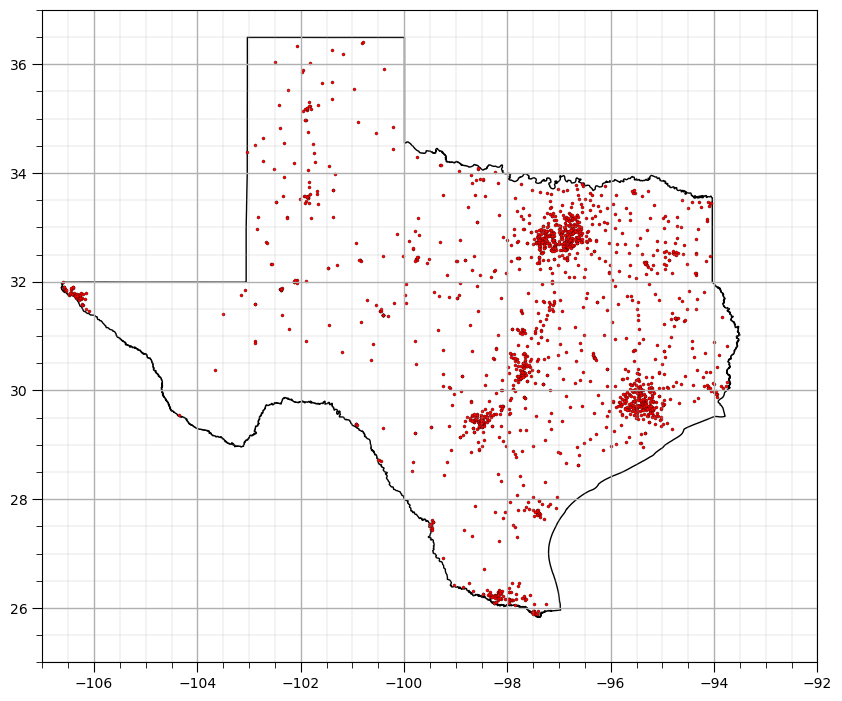
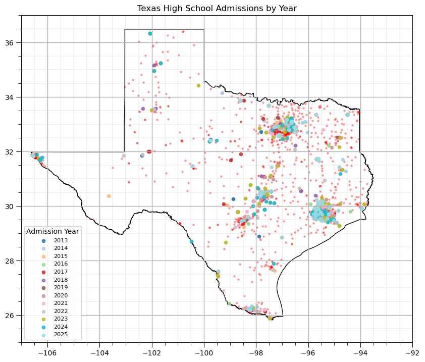
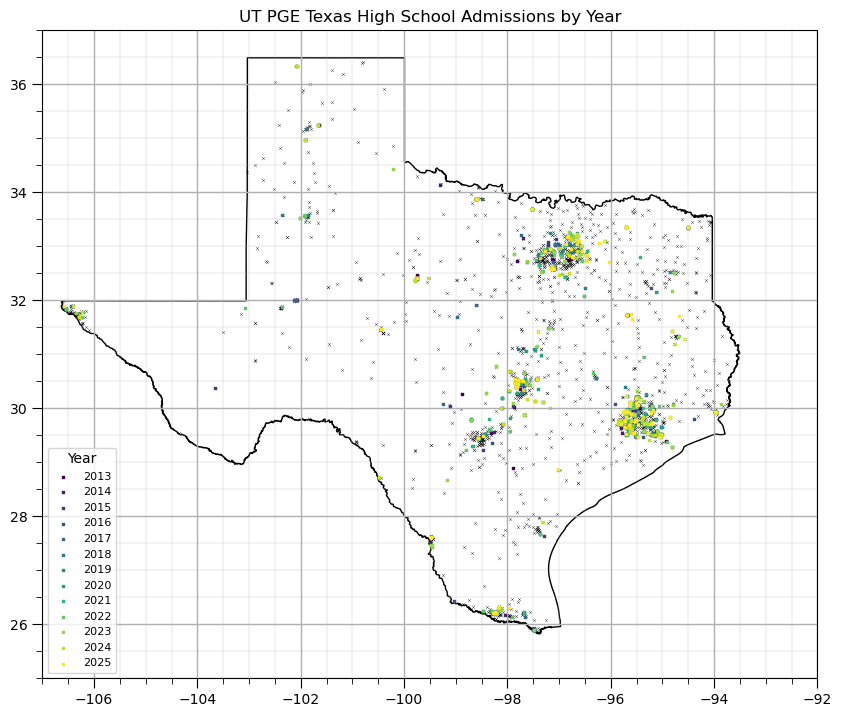
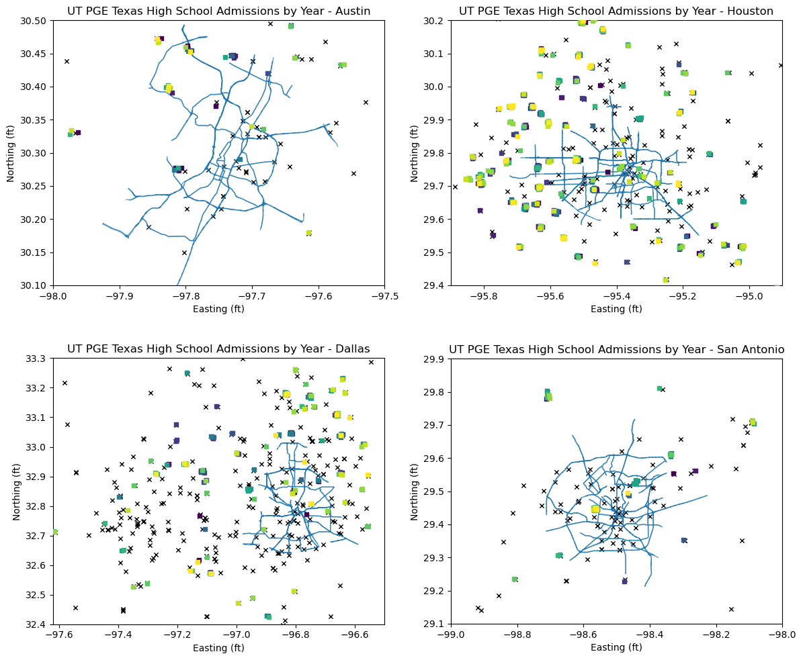
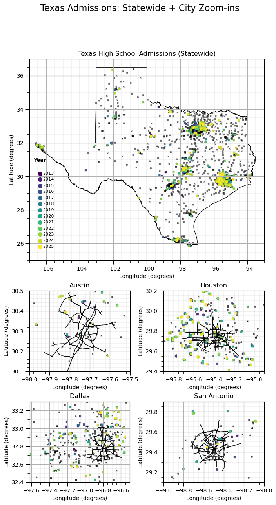
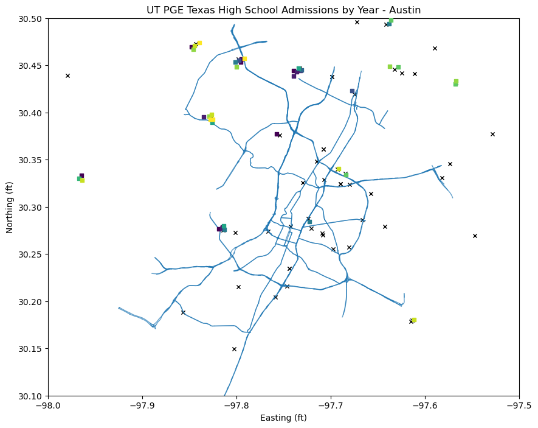
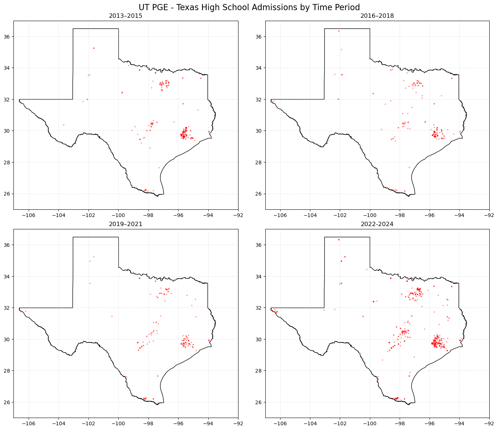
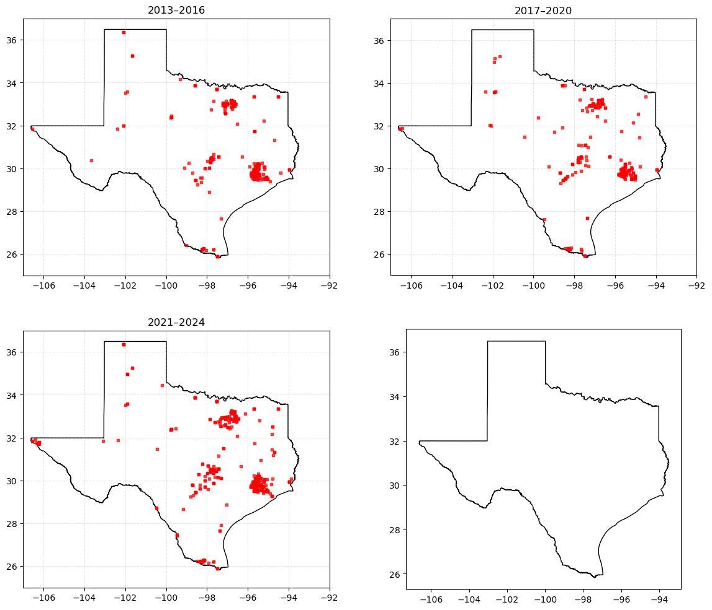

Spatial Trend Modeling, 2D + 1D = 3D#
Michael J. Pyrcz, Professor, The University of Texas at Austin
Twitter | GitHub | Website | GoogleScholar | Book | YouTube | Applied Geostats in Python e-book | LinkedIn
The University of Texas at Austin, Hildebrand Department of Petroleum and Geosystems Engineering Enrollment Spatial Analysis
By Michael J. Pyrcz <br />
© Copyright 2024.
import pandas as pd
import numpy as np
import geopandas as gpd
from shapely.geometry import Point
from geopy.geocoders import Nominatim
from geopy.exc import GeocoderTimedOut
from shapely.geometry import Point
import matplotlib.pyplot as plt
from matplotlib.colors import LinearSegmentedColormap
from matplotlib.ticker import (MultipleLocator, AutoMinorLocator) # control of axes ticks
import matplotlib as mpl
import osmnx as ox
import time
import os
---------------------------------------------------------------------------
ModuleNotFoundError Traceback (most recent call last)
Cell In[1], line 3
1 import pandas as pd
2 import numpy as np
----> 3 import geopandas as gpd
4 from shapely.geometry import Point
5 from geopy.geocoders import Nominatim
ModuleNotFoundError: No module named 'geopandas'
# G_austin = ox.graph_from_place(
# place,
# network_type="drive",
# simplify=True
# )
# G_austin = ox.graph_from_place(
# place,
# network_type="drive",
# simplify=True,
# retain_all=False,
# truncate_by_edge=True
# )
place = "Austin, Texas, USA"
custom_filter = (
'["highway"~"motorway|trunk|primary"]'
)
G_austin = ox.graph_from_place(
place,
custom_filter=custom_filter,
simplify=True
)
place = "Houston, Texas, USA"
custom_filter = (
'["highway"~"motorway|trunk|primary"]'
)
G_houston = ox.graph_from_place(
place,
custom_filter=custom_filter,
simplify=True
)
place = "San Antonio, Texas, USA"
custom_filter = (
'["highway"~"motorway|trunk|primary"]'
)
G_sanantonio = ox.graph_from_place(
place,
custom_filter=custom_filter,
simplify=True
)
place = "Dallas, Texas, USA"
custom_filter = (
'["highway"~"motorway|trunk|primary"]'
)
G_dallas = ox.graph_from_place(
place,
custom_filter=custom_filter,
simplify=True
)
# # Convert to GeoDataFrame
# roads_austin = ox.graph_to_gdfs(G_austin, nodes=False,)
# # Keep only major roads
# major_roads_austin = roads_austin[
# austin_roads["highway"].isin(
# ["motorway", "trunk", "primary", "secondary"]
# )
# ]
# # Project roads to Texas State Plane Central
# major_roads_austin = major_roads_austin.to_crs(epsg=2277)
# fig, ax = plt.subplots(figsize=(10, 10))
# # Plot roads
# major_roads_austin.plot(ax=ax,linewidth=1,alpha=0.7)
# # Plot points
# # points.plot(ax=ax,markersize=30,color='#BF5700',edgecolor='black',alpha=1.0,zorder=10)
# # # Add annotations
# # for _, row in points.iterrows():
# # ax.annotate(
# # text=row["Address"],
# # xy=(row.geometry.x, row.geometry.y),
# # xytext=(5, 5), # offset in points
# # textcoords="offset points",
# # fontsize=8,
# # color="black"
# # )
# ax.set_title("Austin Addresses with Major Roads (State Plane Central)")
# ax.set_xlabel("Easting (ft)")
# ax.set_ylabel("Northing (ft)")
# ax.set_aspect("equal")
# plt.show()
This chapter is a tutorial for / demonstration of GIS Plotting with a practical 2D + 1D approach. We assume that the 2D and 1D trends are calculated from data, we load the former and assume a simple function for the latter.
YouTube Lecture: check out my lecture on Trend Modeling. For convenience here’s a summary of trend modeling.
GIS#
Commonly our spatial data plotting can be improved through the integration of additional spatial data commonly stored in Geographic Information System (GIS) systems:
a framework of software, data, people, and methods used to collect, store, manage, analyze, and visualize data that are referenced to locations on the Earth.
links spatial data (where things are) with attribute data (what things are like), enabling analysis and decision-making based on geographic relationships, patterns, and processes.
Key elements embedded in the definition:
geographic / spatial reference: data are tied to coordinates (latitude–longitude, projected coordinates).
*data integration: combines maps, tables, remote sensing, GPS, and field data.
Analysis: supports operations like overlay, buffering, distance, interpolation, and spatial statistics.
Visualization & communication: maps, dashboards, and spatial models for insight and decisions.
years = sorted(gdf_map["Year"].unique())
n = len(years)
cmap = mpl.colormaps["viridis"].resampled(n)
norm = mpl.colors.BoundaryNorm(range(n+1), n)
year_to_idx = {year: i for i, year in enumerate(years)}
def add_grid(): # add grid lines to plot
plt.gca().grid(True, which='major',linewidth = 1.0); plt.gca().grid(True, which='minor',linewidth = 0.2) # add y grids
plt.gca().tick_params(which='major',length=7); plt.gca().tick_params(which='minor', length=4)
plt.gca().xaxis.set_minor_locator(AutoMinorLocator()); plt.gca().yaxis.set_minor_locator(AutoMinorLocator()) # turn on minor ticks
def add_grid2(sub_plot):
sub_plot.grid(True, which='major',linewidth = 1.0); sub_plot.grid(True, which='minor',linewidth = 0.2) # add y grids
sub_plot.tick_params(which='major',length=7); sub_plot.tick_params(which='minor', length=4)
sub_plot.xaxis.set_minor_locator(AutoMinorLocator()); sub_plot.yaxis.set_minor_locator(AutoMinorLocator()) # turn on minor ticks
def add_model_grid(ax):
ax.xaxis.set_major_locator(mticker.MultipleLocator(5 * xsiz))
ax.yaxis.set_major_locator(mticker.MultipleLocator(5 * ysiz))
ax.xaxis.set_minor_locator(mticker.MultipleLocator(xsiz))
ax.yaxis.set_minor_locator(mticker.MultipleLocator(ysiz))
ax.grid(which='minor', color='black', linewidth=0.3, alpha=0.25)
ax.grid(which='major', color='black', linewidth=0.8, alpha=0.5)
ax.tick_params(which='minor', length=0) # hide minor tick marks
ax.tick_params(which='major', labelsize=8)
def jitter_point(geom): # 3. Apply jitter (in meters)
dx = np.random.normal(0, jitter_strength)
dy = np.random.normal(0, jitter_strength)
return Point(geom.x + dx, geom.y + dy)
os.chdir(r"C:\Users\pm27995\OneDrive - The University of Texas at Austin\UT\PGE\Enrollment")
#### Load Texas School Database
import pandas as pd
# Load CSV
df = pd.read_csv("Schools_2024_to_2025.csv")
# Filter for High Schools only
df_hs = df[df["School_Type"] == "High School"].copy()
# Select requested columns
df_hs = df_hs[
[
"USER_School_Name",
"LongLabel",
"ShortLabel",
"X",
"Y"
]
]
# gdf = gpd.GeoDataFrame(
# df_hs,
# geometry=gpd.points_from_xy(df_hs["X"], df_hs["Y"]),
# crs="EPSG:XXXXX" # depends on TEA dataset
# )
# # convert to WGS84 lat/lon
# gdf = gdf.to_crs("EPSG:4326")
df_hs = df_hs.rename(columns={ # yes database is swapped
"X": "Long",
"Y": "Lat"
})
df_hs["USER_School_Name"] = df_hs["USER_School_Name"].str.replace(" H S", "", regex=False)
# df_hs["lon"] = gdf.geometry.x
# df_hs["lat"] = gdf.geometry.y
# # Optional: clean up missing values
# df_hs = df_hs.dropna(subset=["X", "Y"])
df_hs = df_hs.rename(columns={"USER_School_Name": "HS_name"})
# Save result
df_hs.to_csv("Texas_High_Schools_2024_2025_filtered.csv", index=False)
df_hs.head(20)
| HS_name | LongLabel | ShortLabel | Long | Lat | |
|---|---|---|---|---|---|
| 2 | CAYUGA | 17750 N US Highway 287, Tennessee Colony, TX, ... | 17750 N US Highway 287 | -95.923972 | 31.921565 |
| 7 | FRANKSTON | 100 Perry St, Frankston, TX, 75763, USA | 100 Perry St | -95.502870 | 32.061207 |
| 11 | NECHES | NaN | NaN | 0.000000 | 0.000000 |
| 13 | PALESTINE | 1600 S Loop 256, Palestine, TX, 75801, USA | 1600 S Loop 256 | -95.606199 | 31.739031 |
| 17 | WESTWOOD | 1820 Panther Dr, Palestine, TX, 75803, USA | 1820 Panther Dr | -95.681198 | 31.729495 |
| 22 | ANDREWS | 1400 NW Avenue K, Andrews, TX, 79714, USA | 1400 NW Avenue K | -102.565612 | 32.327466 |
| 23 | ELKHART | 9002 S State Highway 19, Elkhart, TX, 75839, USA | 9002 S State Highway 19 | -95.580607 | 31.655913 |
| 25 | SLOCUM | 5765 E State Highway 294, Elkhart, TX, 75839, USA | 5765 E State Highway 294 | -95.462453 | 31.631038 |
| 26 | ANDREWS EDUCATION CENTER | 405 NW 3rd St, Andrews, TX, 79714, USA | 405 NW 3rd St | -102.551344 | 32.321542 |
| 31 | PINEYWOODS COMMUNITY ACADEMY | 601 S Raguet St, Lufkin, TX, 75904, USA | 601 S Raguet St | -94.731621 | 31.332549 |
| 34 | HUDSON | 6735 Ted Trout Dr, Lufkin, TX, 75904, USA | 6735 Ted Trout Dr | -94.830006 | 31.316004 |
| 36 | STUBBLEFIELD LRN CTR | 502 College Dr, Lufkin, TX, 75904, USA | 502 College Dr | -94.742058 | 31.305013 |
| 38 | STUBBLEFIELD LRN CTR | 502 College Dr, Lufkin, TX, 75904, USA | 502 College Dr | -94.742058 | 31.305013 |
| 40 | LUFKIN | 309 S Medford Dr, Lufkin, TX, 75901, USA | 309 S Medford Dr | -94.689986 | 31.336394 |
| 55 | PRIDE ALTER SCH | 908 N Main St, Huntington, TX, 75949, USA | 908 N Main St | -94.572819 | 31.284895 |
| 58 | HUNTINGTON | 1105 N 5th St, Huntington, TX, 75949, USA | 1105 N 5th St | -94.568716 | 31.286770 |
| 60 | STUBBLEFIELD LRN CTR | 208 N John Redditt Dr, Lufkin, TX, 75904, USA | 208 N John Redditt Dr | -94.760353 | 31.334521 |
| 61 | DIBOLL | 1000 Lumberjack Dr, Diboll, TX, 75941, USA | 1000 Lumberjack Dr | -94.766814 | 31.194550 |
| 65 | STUBBLEFIELD LRN CTR | 208 N John Redditt Dr, Lufkin, TX, 75904, USA | 208 N John Redditt Dr | -94.760353 | 31.334521 |
| 69 | STUBBLEFIELD LRN CTR | 208 N John Redditt Dr, Lufkin, TX, 75904, USA | 208 N John Redditt Dr | -94.760353 | 31.334521 |
df_hs.describe()
| Long | Lat | |
|---|---|---|
| count | 1666.000000 | 1666.000000 |
| mean | -94.847881 | 30.166319 |
| std | 16.347322 | 5.531189 |
| min | -106.598393 | 0.000000 |
| 25% | -98.271768 | 29.655839 |
| 50% | -97.181191 | 31.030324 |
| 75% | -95.640898 | 32.730794 |
| max | 0.000000 | 36.406929 |
# Texas boundary
texas = ox.geocode_to_gdf("Texas, USA")
# your schools (assume df has lat/lon)
gdf_schools = gpd.GeoDataFrame(
df_hs,
geometry=gpd.points_from_xy(df_hs["Long"], df_hs["Lat"]),
crs="EPSG:4326"
)
fig, ax = plt.subplots(figsize=(10, 10))
texas.plot(ax=ax, color="white", edgecolor="black")
gdf_schools.plot(ax=ax, color="red", edgecolor='black',lw=0.2,markersize=5, label='High Schools')
plt.xlim([-107,-92]); plt.ylim([25,37])
add_grid()
plt.show()

df_admitted = pd.read_csv(
"PGE-Freshman-Admitted-Information(2019-2026).csv"
)
# Keep only needed columns
df_admitted = df_admitted[["Year", "HS Name"]].copy()
# 🚨 Step 1: remove completely blank rows
df_admitted = df_admitted.dropna(how="all")
# 🚨 Step 2: remove rows where Year or HS Name is missing
df_admitted = df_admitted.dropna(subset=["Year", "HS Name"])
# 🚨 Step 3: remove rows where Year is not formatted like "15-16"
df_admitted = df_admitted[df_admitted["Year"].astype(str).str.contains(r"\d{2}-\d{2}", na=False)]
# Convert year
df_admitted["admit_year"] = (
2000 + df_admitted["Year"].astype(str).str.split("-").str[0].astype(int)
)
df_admitted['Year'] = df_admitted["admit_year"]
# drop column
df_admitted = df_admitted.drop(columns=["admit_year"])
# rename HS Name -> HS_name
df_admitted = df_admitted.rename(columns={"HS Name": "HS_name"})
df_admitted["HS_name"] = (
df_admitted["HS_name"]
.str.upper()
.str.strip()
.str.replace(r"\s+", " ", regex=True)
)
hs_name_corrections = {
"BELLAIRE SENIOR": "BELLAIRE",
"SAINT JOHN'S SCHOOL": "SAINT JO",
"MEMORIAL SENIOR": "MEMORIAL",
"CY-FAIR SENIOR": "CY-FAIR",
"JAMES E TAYLOR": "TAYLOR",
"WILLIAM P CLEMENTS": "CLEMENTS",
"WILLIAM P. CLEMENTS": "CLEMENTS",
"TEXAS ACADEMY MATH & SCIENCE": "TEXAS ACADEMY OF MATHEMATICS AND SCIENCE",
"I H KEMPNER": "KEMPNER",
"PLANO EAST SENIOR": "PLANO EAST SR",
"THE WOODLANDS COLLEGE PARK": "COLLEGE PARK",
"WOODLANDS COLLEGE PARK THE": "COLLEGE PARK",
"THE WOODLANDS COLLEGE PARK": "COLLEGE PARK",
"GRAPEVINE SENIOR": "GRAPEVINE",
"JOHN COOPER SCHOOL": "COOPER",
"OBRA D TOMPKINS": "TOMPKINS",
"BOERNE SAMUEL V CHAMPION": "BOERNE - SAMUEL V CHAMPION",
"CHARLES H MILBY": "MILBY",
"ROBERT VELA": "ROBERT R VELA",
}
df_admitted["HS_name"] = (
df_admitted["HS_name"]
.str.replace(
r"\s+(HIGH SCHOOL|H\s*S|HS)\s*$",
"",
regex=True
)
.str.strip()
)
# Apply corrections
# df_admitted["HS_name"] = df_admitted["HS_name"].replace(hs_name_corrections)
df_admitted["HS_name"] = df_admitted["HS_name"].map(
lambda x: hs_name_corrections.get(x, x)
)
print((df_admitted["HS_name"] == "THE WOODLANDS COLLEGE PARK").sum())
print((df_admitted["HS_name"] == "BELLAIRE").sum())
# Optional cleanup
df_admitted = df_admitted.reset_index(drop=True)
df_admitted.head(60)
0
18
| Year | HS_name | |
|---|---|---|
| 0 | 2013 | ABILENE |
| 1 | 2013 | ALLEN |
| 2 | 2013 | JAMES W. MARTIN |
| 3 | 2013 | MANSFIELD SUMMIT |
| 4 | 2013 | LAKE TRAVIS |
| 5 | 2013 | JAMES BOWIE |
| 6 | 2013 | WESTWOOD |
| 7 | 2013 | JAMES BOWIE |
| 8 | 2013 | ANDERSON |
| 9 | 2013 | WESTLAKE |
| 10 | 2013 | WESTLAKE |
| 11 | 2013 | WESTWOOD |
| 12 | 2013 | STRAKE JESUIT COLLEGE PREPARATORY SCHOOL |
| 13 | 2013 | BELLAIRE |
| 14 | 2013 | ALL SAINTS EPISCOPAL SCHOOL |
| 15 | 2013 | CEDAR PARK |
| 16 | 2013 | CYPRESS WOODS |
| 17 | 2013 | CY-FAIR |
| 18 | 2013 | CYPRESS RANCH |
| 19 | 2013 | HIGHLAND PARK |
| 20 | 2013 | JESUIT COLLEGE PREPARATORY SCHOOL |
| 21 | 2013 | JESUIT COLLEGE PREPARATORY SCHOOL |
| 22 | 2013 | HIGHLAND PARK |
| 23 | 2013 | FOREIGN |
| 24 | 2013 | FOREIGN |
| 25 | 2013 | EPISCOPAL SCHOOL OF DALLAS |
| 26 | 2013 | PLANO WEST SENIOR |
| 27 | 2013 | ROBERT R VELA |
| 28 | 2013 | EDWARD S MARCUS |
| 29 | 2013 | R.L. PASCHAL |
| 30 | 2013 | FREDERICKSBURG |
| 31 | 2013 | CLEAR SPRINGS |
| 32 | 2013 | ROCKWALL HEATH |
| 33 | 2013 | SPRING WOODS SENIOR |
| 34 | 2013 | STRAKE JESUIT COLLEGE PREPARATORY SCHOOL |
| 35 | 2013 | KINKAID SCHOOL |
| 36 | 2013 | ST JOHN'S SCHOOL |
| 37 | 2013 | STRAKE JESUIT COLLEGE PREPARATORY SCHOOL |
| 38 | 2013 | MEMORIAL |
| 39 | 2013 | STRAKE JESUIT COLLEGE PREPARATORY SCHOOL |
| 40 | 2013 | EPISCOPAL |
| 41 | 2013 | ST. THOMAS |
| 42 | 2013 | CLEAR LAKE |
| 43 | 2013 | LANGHAM CREEK |
| 44 | 2013 | JERSEY VILLAGE SENIOR |
| 45 | 2013 | CY-FAIR |
| 46 | 2013 | CLEAR BROOK |
| 47 | 2013 | LANGHAM CREEK |
| 48 | 2013 | CYPRESS FALLS |
| 49 | 2013 | LAMAR |
| 50 | 2013 | CESAR E CHAVEZ |
| 51 | 2013 | LANGHAM CREEK |
| 52 | 2013 | INTERNATIONAL HIGH SCHOOL AT SHARPSTOWN |
| 53 | 2013 | WESTSIDE |
| 54 | 2013 | WESTSIDE |
| 55 | 2013 | JAMES E. TAYLOR |
| 56 | 2013 | MEMORIAL |
| 57 | 2013 | HOUSTON COMM COLL SYSTEM, ADULT & CONT EDUC |
| 58 | 2013 | FOREIGN |
| 59 | 2013 | WESTFIELD |
df_merged = df_admitted.merge(
df_hs[["HS_name", "Lat", "Long"]],
on="HS_name",
how="left",
indicator=True
)
# print(df_merged["_merge"].value_counts())
# missing_in_hs = df_merged[df_merged["_merge"] == "left_only"]
# print("HS names in admitted data NOT found in df_hs:")
# print(missing_in_hs["HS_name"].value_counts())
# missing_in_hs = df_merged[df_merged["_merge"] == "left_only"]
# print(missing_in_hs["HS_name"].value_counts().to_string())
df_merged = df_merged[df_merged["_merge"] == "both"].copy() # drop records missing from Texas database -
df_merged = df_merged.drop(columns=["_merge"])
df_merged.head()
| Year | HS_name | Lat | Long | |
|---|---|---|---|---|
| 0 | 2013 | ABILENE | 32.455300 | -99.755773 |
| 1 | 2013 | ALLEN | 33.111046 | -96.659166 |
| 3 | 2013 | MANSFIELD SUMMIT | 32.612784 | -97.130246 |
| 4 | 2013 | LAKE TRAVIS | 30.330254 | -97.966830 |
| 5 | 2013 | JAMES BOWIE | 33.350097 | -94.508378 |
gdf_map = gpd.GeoDataFrame(
df_merged,
geometry=gpd.points_from_xy(df_merged["Long"], df_merged["Lat"]),
crs="EPSG:4326"
)
years = sorted(gdf_map["Year"].unique())
cmap = mpl.colormaps["tab20"].resampled(len(years))
fig, ax = plt.subplots(figsize=(10, 10))
texas.plot(ax=ax, color="white", edgecolor="black")
gdf_schools.plot(
ax=ax,
color="red",
markersize=5,
alpha=0.3
)
for year in years:
subset = gdf_map[gdf_map["Year"] == year]
subset.plot(
ax=ax,
color=cmap(year_to_idx[year]),
markersize=20,
label=str(year),
alpha=0.85
)
plt.xlim([-107, -92])
plt.ylim([25, 37])
plt.legend(title="Admission Year", fontsize=8, loc="lower left")
plt.title("Texas High School Admissions by Year")
add_grid()
plt.show()

import pandas as pd
import geopandas as gpd
import matplotlib.pyplot as plt
import matplotlib as mpl
import osmnx as ox
# ----------------------------
# 1. Texas boundary
# ----------------------------
texas = ox.geocode_to_gdf("Texas, USA")
# ----------------------------
# 2. GeoDataFrame for admissions
# df_merged must have: Year, HS_name, Lat, Long
# ----------------------------
gdf_map = gpd.GeoDataFrame(
df_merged,
geometry=gpd.points_from_xy(df_merged["Long"], df_merged["Lat"]),
crs="EPSG:4326"
)
# ----------------------------
# 2. Project to meters (Texas-friendly CRS)
# ----------------------------
gdf_proj = gdf_map.to_crs(epsg=3857)
# ----------------------------
# 3. Apply jitter (in meters)
# ----------------------------
jitter_strength = 500 # meters (ONLY if projected CRS)
def jitter_point(geom):
dx = np.random.normal(0, jitter_strength)
dy = np.random.normal(0, jitter_strength)
return Point(geom.x + dx, geom.y + dy)
gdf_proj["geometry"] = gdf_proj["geometry"].apply(jitter_point)
# ----------------------------
# 4. Back to lat/lon for plotting with Texas boundary
# ----------------------------
gdf_jitter = gdf_proj.to_crs(epsg=4326)
# ----------------------------
# 3. Unique years (ordered)
# ----------------------------
years = sorted(gdf_jitter["Year"].unique())
n = len(years)
# Ordered sequential colormap (good for time)
cmap = mpl.colormaps["viridis"].resampled(n)
norm = mpl.colors.BoundaryNorm(range(n + 1), n)
year_to_idx = {year: i for i, year in enumerate(years)}
# ----------------------------
# 4. Plot
# ----------------------------
fig, ax = plt.subplots(figsize=(10, 10))
# Texas boundary
texas.plot(ax=ax, color="white", edgecolor="black")
# Base HS locations (context layer)
gdf_schools.plot(
ax=ax,
marker='x',
color="black",
lw=0.2,
markersize=5,
alpha=1.0,zorder=1,
)
# Admissions points by year
for year in years:
subset = gdf_jitter[gdf_map["Year"] == year]
subset.plot(
ax=ax,
marker='s',
markersize=4,
color=cmap(year_to_idx[year]),
alpha=1.0,
label=str(year),zorder=10
)
# Map bounds (Texas view)
plt.xlim([-107, -92])
plt.ylim([25, 37])
# ----------------------------
# 5. Discrete colorbar (key feature)
# ----------------------------
sm = mpl.cm.ScalarMappable(cmap=cmap, norm=norm)
sm.set_array([])
# cbar = plt.colorbar(sm, ax=ax, ticks=range(n))
# cbar.ax.set_yticklabels(years)
# cbar.set_label("Admission Year")
# ----------------------------
# 6. Final polish
# ----------------------------
plt.title("UT PGE Texas High School Admissions by Year")
plt.legend(title="Year", loc="lower left", fontsize=8)
add_grid()
plt.show()

fig, axes = plt.subplots(2, 2, figsize=(14, 12))
xmin = [-98.0,-95.9,-97.62,-99.]; xmax = [-97.5,-94.9,-96.5,-98.0]
ymin = [30.1,29.4,32.4,29.1]; ymax = [30.5,30.2,33.3,29.9]
places = ["Austin, Texas, USA","Houston, Texas, USA","Dallas, Texas, USA","San Antonio, Texas, USA"]
city = ['Austin','Houston','Dallas','San Antonio']
for i in range(0,4):
axes = axes.flatten()
ax = axes[i]
# Define Austin boundary
place = places[i]
if i == 0:
roads = ox.graph_to_gdfs(G_austin, nodes=False,) # Convert to GeoDataFrame
elif i == 1:
roads = ox.graph_to_gdfs(G_houston, nodes=False,) # Convert to GeoDataFrame
elif i == 2:
roads = ox.graph_to_gdfs(G_dallas, nodes=False,) # Convert to GeoDataFrame
elif i == 3:
roads = ox.graph_to_gdfs(G_sanantonio, nodes=False,) # Convert to GeoDataFrame
major_roads = roads[roads["highway"].astype(str).str.contains("motorway|trunk|primary|secondary",na=False)] # Keep only major roads
major_roads = major_roads.to_crs(epsg=4326) # project roads to Texas State Plane Central
major_roads.plot(ax=ax,linewidth=1,alpha=0.7) # plot roads
gdf_map = gpd.GeoDataFrame(df_merged, # GeoDataFrame for admissions, df_merged must have: Year, HS_name, Lat, Long
geometry=gpd.points_from_xy(df_merged["Long"], df_merged["Lat"]),crs="EPSG:4326")
gdf_proj = gdf_map.to_crs(epsg=3857) # project to meters (Texas-friendly CRS)
jitter_strength = 400.0 # meters (ONLY if projected CRS)
gdf_proj["geometry"] = gdf_proj["geometry"].apply(jitter_point)
gdf_jitter = gdf_proj.to_crs(epsg=4326) # back to lat/lon for plotting with Texas boundary
gdf_schools.plot(ax=ax,marker='x',color="black",lw=1.0,markersize=20,alpha=1.0,zorder=1,) # Base HS locations (context layer)
for year in years: # admissions points by year
subset = gdf_jitter[gdf_map["Year"] == year]
subset.plot(ax=ax,marker='s',markersize=20,color=cmap(year_to_idx[year]),alpha=1.0,label=str(year),zorder=10)
ax.set_xlim([xmin[i],xmax[i]]); ax.set_ylim([ymin[i],ymax[i]])
ax.set_title("UT PGE Texas High School Admissions by Year - " + city[i])
ax.set_xlabel("Easting (ft)"); ax.set_ylabel("Northing (ft)")
ax.set_aspect("equal")
plt.show()

import numpy as np
def add_year_legend_to_ax(ax, years, cmap, year_to_idx,
loc=[0.72, 0.05, 0.28, 0.55],
title="Admission Year",
fontsize=10):
legend_ax = ax.inset_axes(loc)
legend_ax.set_axis_off()
# optional background box (VERY helpful)
legend_ax.set_facecolor("white")
legend_ax.patch.set_alpha(0.9)
# title centered
legend_ax.text(
0.19, 1.00,
title,
ha="center",
va="bottom",
fontsize=9,
)
# spacing
y_positions = np.linspace(0.90, 0.05, len(years))
for y, year in zip(y_positions, years):
color = cmap(year_to_idx[year])
# dot (left column)
legend_ax.scatter(
0.18, y,
s=50,
color=color,
clip_on=False
)
# text (CENTERED relative to available space)
legend_ax.text(
0.181, y,
str(year),
va="center",
ha="left", # IMPORTANT FIX
fontsize=fontsize
)
return legend_ax
import matplotlib.pyplot as plt
import matplotlib.gridspec as gridspec
import osmnx as ox
xmin = [-98.0,-95.9,-97.62,-99.]; xmax = [-97.5,-94.9,-96.5,-98.0]
ymin = [30.1,29.4,32.4,29.1]; ymax = [30.5,30.2,33.3,29.9]
# ----------------------------
# FIGURE + GRID
# ----------------------------
fig = plt.figure(figsize=(14, 14))
gs = gridspec.GridSpec(
nrows=3,
ncols=2,
height_ratios=[2.5, 1, 1], # <-- KEY FIX (Texas = 2x height)
hspace=0.25,
wspace=-0.54
)
# ----------------------------
# AXES
# ----------------------------
ax_texas = fig.add_subplot(gs[0, :])
ax_austin = fig.add_subplot(gs[1, 0])
ax_houston = fig.add_subplot(gs[1, 1])
ax_dallas = fig.add_subplot(gs[2, 0])
ax_sanantonio = fig.add_subplot(gs[2, 1])
# ----------------------------
# TEXAS MAP (TOP - 2x HEIGHT)
# ----------------------------
texas.plot(ax=ax_texas, color="white", edgecolor="black")
gdf_schools.plot(
ax=ax_texas,
marker='x',
color="black",
markersize=8,
alpha=0.6
)
for year in years:
subset = gdf_jitter[gdf_jitter["Year"] == year]
subset.plot(
ax=ax_texas,
marker='s',
markersize=6,
alpha=0.7,
color=cmap(year_to_idx[year])
)
years = sorted(gdf_jitter["Year"].unique())
n = len(years)
cmap = mpl.colormaps["viridis"].resampled(n) # ordered sequential colormap (good for time)
norm = mpl.colors.BoundaryNorm(range(n + 1), n)
sm = mpl.cm.ScalarMappable(cmap=cmap, norm=norm)
sm.set_array([])
# cbar = plt.colorbar(sm, ax=ax_texas, ticks=range(n))
# cbar.ax.set_yticklabels(years)
# cbar.set_label("Admission Year")
add_year_legend_to_ax(
ax_texas, # or ax_austin, ax_houston, etc.
years,
cmap,
year_to_idx,
loc=[-0.08, 0.05, 0.25, 0.4], # right side, half height
title="Year",fontsize=8
)
add_grid2(ax_texas)
ax_texas.set_title("Texas High School Admissions (Statewide)")
ax_texas.set_xlim([-107, -93]); ax_texas.set_ylim([25, 37])
ax_texas.set_aspect("equal"); ax_texas.set_ylabel('Latitude (degrees)'); ax_texas.set_xlabel('Longitude (degrees)')
# handles, labels = ax_texas.get_legend_handles_labels()
# ax_texas.legend(handles, labels, title="Year", loc="lower left", fontsize=8)
def plot_city(ax, G, title, xlim, ylim):
roads = ox.graph_to_gdfs(G, nodes=False).to_crs(epsg=4326)
major = roads[
roads["highway"].astype(str).str.contains(
"motorway|trunk|primary|secondary",
na=False
)
]
major.plot(ax=ax, color="black", linewidth=1, alpha=0.7)
gdf_schools.plot(ax=ax,marker='x',color="black",markersize=6,alpha=0.7)
for year in years:
subset = gdf_jitter[gdf_jitter["Year"] == year]
subset.plot(
ax=ax,
marker='s',
markersize=6,
alpha=0.8,
color=cmap(year_to_idx[year])
)
add_grid2(ax)
ax.set_title(title); ax.set_xlim(xlim); ax.set_xlabel('Longitude (degrees)')
ax.set_ylim(ylim); ax.set_aspect("equal"); ax.set_ylabel('Latitude (degrees)')
plot_city(ax_austin, G_austin, "Austin", [xmin[0],xmax[0]], [ymin[0],ymax[0]])
plot_city(ax_houston, G_houston, "Houston", [xmin[1],xmax[1]], [ymin[1],ymax[1]])
plot_city(ax_dallas, G_dallas, "Dallas", [xmin[2],xmax[2]], [ymin[2],ymax[2]])
plot_city(ax_sanantonio, G_sanantonio, "San Antonio", [xmin[3],xmax[3]], [ymin[3],ymax[3]])
plt.suptitle("Texas Admissions: Statewide + City Zoom-ins", fontsize=16)
# plt.tight_layout()
plt.show()

print("test")
[xmin[i],xmax[i]]
roads_austin = ox.graph_to_gdfs(G_austin, nodes=False,) # Convert to GeoDataFrame
major_roads_austin = roads_austin[roads_austin["highway"].astype(str).str.contains("motorway|trunk|primary|secondary",na=False)] # Keep only major roads
major_roads_austin = major_roads_austin.to_crs(epsg=4326) # project roads to Texas State Plane Central
fig, ax = plt.subplots(figsize=(10, 10))
major_roads_austin.plot(ax=ax,linewidth=1,alpha=0.7) # plot roads
gdf_map = gpd.GeoDataFrame(df_merged, # GeoDataFrame for admissions, df_merged must have: Year, HS_name, Lat, Long
geometry=gpd.points_from_xy(df_merged["Long"], df_merged["Lat"]),crs="EPSG:4326")
gdf_proj = gdf_map.to_crs(epsg=3857) # project to meters (Texas-friendly CRS)
jitter_strength = 400.0 # meters (ONLY if projected CRS)
gdf_proj["geometry"] = gdf_proj["geometry"].apply(jitter_point)
gdf_jitter = gdf_proj.to_crs(epsg=4326) # back to lat/lon for plotting with Texas boundary
gdf_schools.plot(ax=ax,marker='x',color="black",lw=1.0,markersize=20,alpha=1.0,zorder=1,) # Base HS locations (context layer)
for year in years: # admissions points by year
subset = gdf_jitter[gdf_map["Year"] == year]
subset.plot(ax=ax,marker='s',markersize=20,color=cmap(year_to_idx[year]),alpha=1.0,label=str(year),zorder=10)
ax.set_xlim([-98.0,-97.5]); ax.set_ylim([30.1,30.5])
ax.set_title("UT PGE Texas High School Admissions by Year - Austin")
ax.set_xlabel("Easting (ft)"); ax.set_ylabel("Northing (ft)")
ax.set_aspect("equal"); plt.show()

roads_austin.head()
| osmid | bridge | highway | lanes | maxspeed | oneway | ref | reversed | length | geometry | name | tunnel | junction | access | |||
|---|---|---|---|---|---|---|---|---|---|---|---|---|---|---|---|---|
| u | v | key | ||||||||||||||
| 26546039 | 1332570370 | 0 | [4358672, 154971857, 8142388] | yes | motorway | [4, 5] | 65 mph | True | US 183 | False | 857.303360 | LINESTRING (-97.79897 30.47294, -97.79883 30.4... | NaN | NaN | NaN | NaN |
| 26546046 | 26546082 | 0 | [184849625, 1094482002, 436729437] | yes | motorway | 5 | 75 mph | True | 183A Toll | False | 445.751207 | LINESTRING (-97.80115 30.47797, -97.80209 30.4... | 183A Toll Road | NaN | NaN | NaN |
| 26546053 | 1953898431 | 0 | [184849764, 184849626, 4531244] | yes | motorway | [3, 5] | 75 mph | True | 183A Toll | False | 476.766755 | LINESTRING (-97.80403 30.48214, -97.80289 30.4... | 183A Toll Road | NaN | NaN | NaN |
| 26546058 | 1953910981 | 0 | [4531240, 436729445] | NaN | primary | [3, 5] | NaN | True | US 183 | False | 48.874996 | LINESTRING (-97.80427 30.48567, -97.80427 30.4... | NaN | NaN | NaN | NaN |
| 26546065 | 26546067 | 0 | 436729446 | NaN | primary | 3 | NaN | True | US 183 | False | 14.772149 | LINESTRING (-97.80419 30.48683, -97.80418 30.4... | NaN | NaN | NaN | NaN |
import pandas as pd
import geopandas as gpd
import matplotlib.pyplot as plt
import osmnx as ox
# ----------------------------
# 1. Clean data (critical for aspect errors)
# ----------------------------
df_merged = df_merged.dropna(subset=["Lat", "Long", "Year"])
# ----------------------------
# 2. Texas boundary (force CRS consistency)
# ----------------------------
texas = ox.geocode_to_gdf("Texas, USA").to_crs("EPSG:4326")
# ----------------------------
# 3. GeoDataFrame
# ----------------------------
gdf_map = gpd.GeoDataFrame(
df_merged,
geometry=gpd.points_from_xy(df_merged["Long"], df_merged["Lat"]),
crs="EPSG:4326"
)
# ----------------------------
# 4. Year groups
# ----------------------------
groups = {
"2013–2015": list(range(2013, 2016)),
"2016–2018": list(range(2016, 2019)),
"2019–2021": list(range(2019, 2022)),
"2022-2024": list(range(2019, 2025))
}
# ----------------------------
# 5. Plot
# ----------------------------
fig, axes = plt.subplots(2, 2, figsize=(14, 12))
axes = axes.flatten()
for ax, (title, yrs) in zip(axes, groups.items()):
# Texas boundary
texas.plot(ax=ax, color="white", edgecolor="black")
# Filter safely
subset = gdf_map[gdf_map["Year"].isin(yrs)].copy()
if subset.empty:
ax.set_title(f"{title} (no data)")
ax.set_xlim([-107, -92])
ax.set_ylim([25, 37])
ax.grid(True, linestyle="--", alpha=0.3)
continue
# Plot admissions
subset.plot(
ax=ax,
marker='s',
color="red",
markersize=3,
alpha=0.3,
zorder=5
)
# Styling
ax.set_title(title, fontsize=12)
ax.set_xlim([-107, -92])
ax.set_ylim([25, 37])
ax.set_xlabel("")
ax.set_ylabel("")
ax.grid(True, linestyle="--", alpha=0.3)
plt.suptitle("UT PGE - Texas High School Admissions by Time Period", fontsize=16)
plt.tight_layout()
plt.show()

import matplotlib.pyplot as plt
import geopandas as gpd
import osmnx as ox
# ----------------------------
# 1. Texas boundary
# ----------------------------
texas = ox.geocode_to_gdf("Texas, USA")
# ----------------------------
# 2. GeoDataFrame (no jitter for clarity here)
# ----------------------------
gdf_map = gpd.GeoDataFrame(
df_merged,
geometry=gpd.points_from_xy(df_merged["Long"], df_merged["Lat"]),
crs="EPSG:4326"
)
# ----------------------------
# 3. Year groups
# ----------------------------
groups = {
"2013–2016": list(range(2013, 2017)),
"2017–2020": list(range(2017, 2021)),
"2021–2024": list(range(2021, 2025)),
"2005": [2005]
}
# ----------------------------
# 4. Plot
# ----------------------------
fig, axes = plt.subplots(2, 2, figsize=(14, 12))
axes = axes.flatten()
for ax, (title, yrs) in zip(axes, groups.items()):
# Texas outline
texas.plot(ax=ax, color="white", edgecolor="black")
# Filter admissions
subset = gdf_map[gdf_map["Year"].isin(yrs)]
# Plot ONLY red squares
subset.plot(
ax=ax,
marker='s',
color="red",
markersize=6,
alpha=0.7,
zorder=5
)
# Styling
ax.set_title(title, fontsize=12)
ax.set_xlim([-107, -92])
ax.set_ylim([25, 37])
ax.set_xlabel("")
ax.set_ylabel("")
ax.grid(True, linestyle="--", alpha=0.3)
plt.suptitle("Texas High School Admissions by Time Period", fontsize=16)
plt.tight_layout()
plt.show()
---------------------------------------------------------------------------
ValueError Traceback (most recent call last)
Cell In[138], line 44
41 subset = gdf_map[gdf_map["Year"].isin(yrs)]
43 # Plot ONLY red squares
---> 44 subset.plot(
45 ax=ax,
46 marker='s',
47 color="red",
48 markersize=6,
49 alpha=0.7,
50 zorder=5
51 )
53 # Styling
54 ax.set_title(title, fontsize=12)
File ~\AppData\Local\anaconda3\Lib\site-packages\geopandas\plotting.py:962, in GeoplotAccessor.__call__(self, *args, **kwargs)
960 kind = kwargs.pop("kind", "geo")
961 if kind == "geo":
--> 962 return plot_dataframe(data, *args, **kwargs)
963 if kind in self._pandas_kinds:
964 # Access pandas plots
965 return PlotAccessor(data)(kind=kind, **kwargs)
File ~\AppData\Local\anaconda3\Lib\site-packages\geopandas\plotting.py:662, in plot_dataframe(df, column, cmap, color, ax, cax, categorical, legend, scheme, k, vmin, vmax, markersize, figsize, legend_kwds, categories, classification_kwds, missing_kwds, aspect, autolim, **style_kwds)
660 bounds = df.total_bounds
661 y_coord = np.mean([bounds[1], bounds[3]])
--> 662 ax.set_aspect(1 / np.cos(y_coord * np.pi / 180))
663 # formula ported from R package sp
664 # https://github.com/edzer/sp/blob/master/R/mapasp.R
665 else:
666 ax.set_aspect("equal")
File ~\AppData\Local\anaconda3\Lib\site-packages\matplotlib\axes\_base.py:1728, in _AxesBase.set_aspect(self, aspect, adjustable, anchor, share)
1726 aspect = float(aspect) # raise ValueError if necessary
1727 if aspect <= 0 or not np.isfinite(aspect):
-> 1728 raise ValueError("aspect must be finite and positive ")
1730 if share:
1731 axes = {sibling for name in self._axis_names
1732 for sibling in self._shared_axes[name].get_siblings(self)}
ValueError: aspect must be finite and positive

print(df_merged["_merge"].value_counts())
_merge
both 1092
left_only 359
right_only 0
Name: count, dtype: int64
missing_in_hs = df_merged[df_merged["_merge"] == "left_only"]
print("HS names in admitted data NOT found in df_hs:")
print(missing_in_hs["HS_name"].value_counts())
HS names in admitted data NOT found in df_hs:
HS_name
STRAKE JESUIT COLLEGE PREP 15
EPISCOPAL 13
JESUIT COLLEGE PREPARATORY SCH 9
FOREIGN 8
KINKAID SCHOOL 7
..
INTERNATIONAL LEADERSHIP OF TEXAS- GARLAND 1
JOHN PAUL II CATHOLIC 1
CORAM DEO ACADEMY 1
HARMONY SCHOOL OF EXCELLENCE-AUSTIN 1
PROVIDENCE CLASSICAL SCHOOL 1
Name: count, Length: 203, dtype: int64
missing_in_hs = df_merged[df_merged["_merge"] == "left_only"]
print(missing_in_hs["HS_name"].value_counts().to_string())
HS_name
STRAKE JESUIT COLLEGE PREP 15
EPISCOPAL 13
JESUIT COLLEGE PREPARATORY SCH 9
FOREIGN 8
KINKAID SCHOOL 7
AWTY INTERNATIONAL SCHOOL 6
THE KINKAID SCHOOL 6
HOUSTON CHRISTIAN 5
HOME SCHOOLED 5
RONALD REAGAN 4
LOUIS D BRANDEIS 4
STRAKE JESUIT COLLEGE PREPARATORY SCHOOL 4
SECOND BAPTIST UPPER SCHOOL 4
ELKINS 4
PLANO SENIOR 4
SANDRA DAY O'CONNOR 4
ST. THOMAS 4
EPISCOPAL SCHOOL OF DALLAS 4
LIBERAL ARTS & SCIENCE ACAD 3
L V HIGHTOWER 3
DEER PARK HIGH SCHOOL SOUTH 3
A&M CONSOLIDATED 3
YES PREP PUBLIC SCHOOLS- EAST END 3
SCIENCE AND ENGINEERING MAGNET AT TOWNVIEW 3
MIRABEAU B LAMAR SR HIGH SCH 3
WOODLANDS CHRISTIAN ACADEMY 3
JAMES W MARTIN 3
ST. MARK'S SCHOOL 3
JOHN JAY 3
NEW BRAUNFELS SENIOR 3
LLOYD V BERKNER 2
THELMA R SALINAS STEM EARLY COLLEGE 2
OAKRIDGE SCHOOL 2
PARISH EPISCOPAL SCHOOL 2
WINSTON CHURCHILL 2
DR KIRK LEWIS CAREER AND TECH 2
WICHITA FALLS 2
CATHEDRAL 2
A N MCCALLUM 2
JOHN A DUBISKI CAREER H.S. 2
LUTHERAN HIGH SCHOOL OF DALLAS 2
IDEA QUEST COLLEGE PREPARATORY 2
SAINT STEPHENS EPISCOPAL SCH 2
JESUIT COLLEGE PREPARATORY SCHOOL 2
DHAHRAN AHLIYYA SCHOOL 2
NORTH SHORE SENIOR 2
ALIEF TAYLOR 2
ALL SAINTS EPISCOPAL SCHOOL 2
WEST BROOK SENIOR 2
JAMES E. TAYLOR 2
JOHN PAUL II 2
DR JOHN D HORN 2
JUAN DIEGO ACADEMY 2
EARL WARREN 2
CESAR E CHAVEZ 2
J J PEARCE 2
ROUND ROCK EARLY COLLEGE 2
YES PREP PUBLIC SCHOOLS- SOUTHWEST 2
VANGUARD 2
SPRING WOODS SENIOR 2
W CHARLES AKINS 2
ROBERT L PASCHAL 2
CAPTAIN JOHN L CHAPIN 2
CLAUDIA TAYLOR LADY BIRD JOHNSON HIGH SCHOO 2
URSULINE ACADEMY 2
INCARNATE WORD ACADEMY 2
TOM C CLARK 2
THE VILLAGE SCHOOL 2
ALLEN ACADEMY 2
NORTHBROOK SENIOR 2
FORT WORTH CHRISTIAN SCHOOL 1
JOHNNY ECONOMEDES 1
IDEA MONTERREY PARK COLLEGE PREPARATORY 1
SAINT JOSEPH ACADEMY 1
SHARPSTOWN INTERNATIONAL SCHOOL 1
KIPP UNIVERSITY PREP HIGH SCHL 1
IDEA MONTOPOLIS COLLEGE PREPARATORY 1
SAINT THOMAS EPISCOPAL SCHOOL 1
TEXAS MILITARY INSTITUTE 1
HARMONY SCHOOL OF INNOVATION-BROWNSVILLE 1
HARMONY SCIENCE ACADEMY-PFLUGERVILLE 1
SAM HOUSTON MATH SCIENCE AND TECHNOLOGY 1
IDEA COLLEGE PREPARATORY PHARR 1
YOUNG WOMENS COLLEGE PREPARATORY ACADEMY 1
DENISON SENIOR 1
UPLIFT PEAK PREPARATORY 1
PHILLIPS EXETER ACADEMY 1
BELTON NEW TECH HIGH AT WASKOW 1
HARMONY SCHOOL OF INGENUITY-HOUSTON 1
YES PREP DWIGHT D EISENHOWER 1
SCHOOL OF SCIENCE AND TECHNOLOGY 1
JAMES W. MARTIN 1
IDEA SOUTH FLORES COLLEGE PREP 1
MIDLAND CLASSICAL ACADEMY 1
ANTONIAN COLLEGE PREPARATORY 1
INCARNATE WORD 1
PIONEER TECHNOLOGY AND ARTS ACADEMY NORTH D 1
IDEA SAN JUAN COLLEGE PREPARATORY 1
PRESTONWOOD CHRISTIAN ACADEMY 1
BENJAMIN O DAVIS 1
YES PREP PUBLIC SCHOOLS- NORTH FOREST 1
PATRICIA E PAETOW 1
PRESBYTERIAN PAN AMERICAN SCH 1
MIDLAND CHRISTIAN SCHOOL 1
ODESSA COLLEGIATE ACADEMY 1
HYDE PARK 1
ADVANCED LEARNING ACADEMY 1
BASIS SAN ANTONIO - SHAVANO CAMPUS 1
JOHN M. HARLAN 1
MERIDIAN WORLD SCHOOL 1
MCALLEN MEMORIAL 1
OLIVER WENDELL HOLMES 1
NIKKI ROWE 1
PLATTSBURGH SENIOR 1
WILLIAM J BRENNAN 1
FORT BEND CHRISTIAN ACADEMY 1
GRAPEVINE FAITH CHRISTIAN SCHOOL 1
CHINQUAPIN SCHOOL 1
GRANBURY SENIOR 1
LOGOS PREPARATORY ACADEMY 1
YES PREP PUBLIC SCHOOLS- WHITE OAK 1
YES PREP PUBLIC SCHOOLS- WEST 1
ROBERT TURNER COLLEGE AND CAREER HIGH SCHOO 1
CENTRAL CATHOLIC 1
PSJA COLLEGIATE SCHOOL OF HEALTH PROFESSION 1
BRYAN 1
SOUTH GARLAND 1
SAINT AGNES ACADEMY 1
HARMONY SCHOOL OF INNOVATION - DALLAS 1
NORTHSIDE HEALTH CAREERS 1
PORT ISABEL 1
W B RAY 1
LEAKEY 1
PSJA SOUTHWEST 1
ANTONIAN COLLEGE PREPARATORY H 1
WESTLAKE ACADEMY 1
ST DOMINIC SAVIO CATHOLIC 1
BOOKER T. WASHINGTON HS/PERF VIS ARTS 1
TRINITY VALLEY SCHOOL 1
SOUTH TEXAS ACADEMY OF MEDICAL 1
FAITH ACADEMY OF MARBLE FALLS 1
ROBERT E LEE 1
S P WALTRIP SENIOR 1
ALDINE SENIOR 1
INSTITUT LE ROSEY 1
HARMONY SCHOOL OF ADVANCEMENT 1
SCIENCE ACADEMY OF SOUTH TEXAS 1
POPE JOHN XXIII 1
VILLAGE 1
IDEA COLLEGE PREP-SAN JUAN 1
HOUSTON COMM COLL SYSTEM, ADULT & CONT EDUC 1
EDWARD S MARCUS 1
R.L. PASCHAL 1
ROCKWALL HEATH 1
ST JOHN'S SCHOOL 1
JERSEY VILLAGE SENIOR 1
INTERNATIONAL HIGH SCHOOL AT SHARPSTOWN 1
DEBAKEY HS FOR HEALTH PROFESSIONS 1
WARREN T WHITE 1
LAMAR CONSOLIDATED 1
WESTBURY CHRISTIAN 1
ALAMO HEIGHTS SENIOR 1
ROBERT E. LEE 1
L C ANDERSON 1
A & M CONSOLIDATED 1
S H RIDER 1
C F BREWER 1
CONSTRUCTION CAREERS ACADEMY 1
DR JUSTIN WAKELAND 1
RADFORD SCHOOL 1
FORT WORTH ACADEMY OF FINE ART 1
SEQUOYAH 1
STEM EARLY COLLEGE HS ALAMO COLLEGES PALO 1
THEODORE ROOSEVELT 1
ST ANTHONY CATHOLIC 1
UPLIFT SUMMIT INTERNATIONAL PREPARATORY 1
SAINT MICHAELS CATHOLIC ACADEMY 1
IDEA COLLEGE PREPARATORY BROWNSVILLE 1
ISCHOOL HIGH AT MONTGOMERY THE WOODLANDS 1
ROY MILLER 1
HARLINGEN HIGH SCHOOL SOUTH 1
YES PREP PUBLIC SCHOOLS- NORTH CENTRAL 1
YES PREP PUBLIC SCHOOLS- SOUTHEAST 1
PALACIOS 1
ONALASKA JR SR 1
CEDAR HILL COLLEGIATE HIGH SCH 1
LAWRENCE D BELL 1
ST ANDREWS EPISCOPAL SCHOOL 1
VILLAGE SCHOOL THE 1
MARRIOTTS RIDGE 1
BRITISH INTERNATIONAL SCHOOL OF HOUSTON 1
LA FERIA 1
THOMAS A EDISON 1
ESPRIT INTERNATIONAL SCHOOL 1
ISCHOOL HIGH STEM ACADEMY 1
STERLING CLASSICAL SCHOOL 1
HARMONY SCHOOL OF INNOVATION 1
DAWSON 1
INTERNATIONAL LEADERSHIP OF TEXAS- GARLAND 1
JOHN PAUL II CATHOLIC 1
CORAM DEO ACADEMY 1
HARMONY SCHOOL OF EXCELLENCE-AUSTIN 1
PROVIDENCE CLASSICAL SCHOOL 1
BELLAIRE SENIOR - BELLAIRE, SAINT JOHN’S SCHOOL to SAINT JO, STRAKE JESUIT COLLEGE PREP is missing, MEMORIAL SENIOR to MEMORIAL, EPISCOPAL is missing, CY-FAIR SENIOR to CY-FAIR, JAMES E TAYLOR to TAYLOR, WILLIAM P CLEMENTS to CLEMENTS, TEXAS ACADEMY MATH & SCIENCE to TEXAS ACADEMY OF MATHEMATICS AND SCIENCE, I H KEMPNER to KEMPNER, PLANO EAST SENIOR to PLANO EAST SR, THE WOODLANDS COLLEGE PARK HS to COLLEGE PARK H S, GRAPEVINE SENIOR to GRAPEVINE, JOHN COOPER SCHOOL to COOPER, OBRA D TOMPKINS to TOMPKINS, BOERNE SAMUEL V CHAMPION to BOERNE - SAMUEL V CHAMPION, CHARLES H MILBY to MILBY, ROBERT VELA to ROBERT R VELA, WILLIAM P. CLEMENTS to CLEMENTS
print((df_admitted["HS_name"] == "THE WOODLANDS COLLEGE PARK").sum())
0
#### Download drivable road network - Warning this will take a few minutes
G_austin = ox.graph_from_place(
place,
network_type="drive",
simplify=True
)
#### Start Here
# Define Austin boundary
place = "Austin, Texas, USA"
# Convert to GeoDataFrame
roads = ox.graph_to_gdfs(G, nodes=False,)
# Keep only major roads
major_roads = roads[
roads["highway"].isin(
["motorway", "trunk", "primary", "secondary"]
)
]
# Project roads to Texas State Plane Central
major_roads = major_roads.to_crs(epsg=2277)
From Addresses to Lat and Long to Northings and Eastings#
addresses = [
"4801 La Crosse Ave, Austin, TX 78739",
"2317 Speedway, Austin, TX",
"401 Congress Ave, Austin, TX",
"4100 River Place Blvd., Austin, TX",
]
df = pd.DataFrame({"Address": addresses})
geolocator = Nominatim(user_agent="austin_geocoder")
def geocode_address(addr, pause=1):
try:
loc = geolocator.geocode(addr)
time.sleep(pause) # be polite to OSM
if loc:
return loc.latitude, loc.longitude
except GeocoderTimedOut:
return geocode_address(addr, pause)
return None, None
df[["Lat", "Long"]] = df["Address"].apply(
lambda x: pd.Series(geocode_address(x))
)
gdf = gpd.GeoDataFrame(
df,
geometry=[Point(xy) for xy in zip(df.Long, df.Lat)],
crs="EPSG:4326"
)
# Project to Texas State Plane Central (Austin)
gdf = gdf.to_crs(epsg=2277)
# Extract Easting / Northing
df["Easting"] = gdf.geometry.x
df["Northing"] = gdf.geometry.y
points = gpd.GeoDataFrame(
df,
geometry=[Point(xy) for xy in zip(df.Easting, df.Northing)],
crs="EPSG:2277"
)
| Address | Lat | Long | Easting | Northing | |
|---|---|---|---|---|---|
| 0 | 4801 La Crosse Ave, Austin, TX 78739 | 30.185667 | -97.873404 | 3.073757e+06 | 1.003986e+07 |
| 1 | 2317 Speedway, Austin, TX | 30.286229 | -97.736580 | 3.116122e+06 | 1.007740e+07 |
| 2 | 401 Congress Ave, Austin, TX | 30.266284 | -97.743114 | 3.114230e+06 | 1.007010e+07 |
| 3 | 4100 River Place Blvd., Austin, TX | 30.367759 | -97.862323 | 3.075786e+06 | 1.010614e+07 |
df.head()
0 4801 La Crosse Ave, Austin, TX 78739
1 2317 Speedway, Austin, TX
2 401 Congress Ave, Austin, TX
3 4100 River Place Blvd., Austin, TX
Name: Address, dtype: object
fig, ax = plt.subplots(figsize=(10, 10))
# Plot roads
major_roads.plot(
ax=ax,
linewidth=1,
alpha=0.7
)
# Plot points
points.plot(ax=ax,markersize=30,color='#BF5700',edgecolor='black',alpha=1.0,zorder=10)
# Add annotations
for _, row in points.iterrows():
ax.annotate(
text=row["Address"],
xy=(row.geometry.x, row.geometry.y),
xytext=(5, 5), # offset in points
textcoords="offset points",
fontsize=8,
color="black"
)
ax.set_title("Austin Addresses with Major Roads (State Plane Central)")
ax.set_xlabel("Easting (ft)")
ax.set_ylabel("Northing (ft)")
ax.set_aspect("equal")
plt.show()

points
| Address | Lat | Long | Easting | Northing | geometry | |
|---|---|---|---|---|---|---|
| 0 | 110 Inner Campus Dr, Austin, TX | 30.286071 | -97.739352 | 3.115249e+06 | 1.007732e+07 | POINT (3115249.053 10077324.947) |
| 1 | 2317 Speedway, Austin, TX | 30.286229 | -97.736580 | 3.116122e+06 | 1.007740e+07 | POINT (3116122.435 10077402.733) |
| 2 | 401 Congress Ave, Austin, TX | 30.266284 | -97.743114 | 3.114230e+06 | 1.007010e+07 | POINT (3114229.614 10070103.017) |
| 3 | 4100 River Place Blvd., Austin, TX | 30.367759 | -97.862323 | 3.075786e+06 | 1.010614e+07 | POINT (3075785.855 10106143.14) |